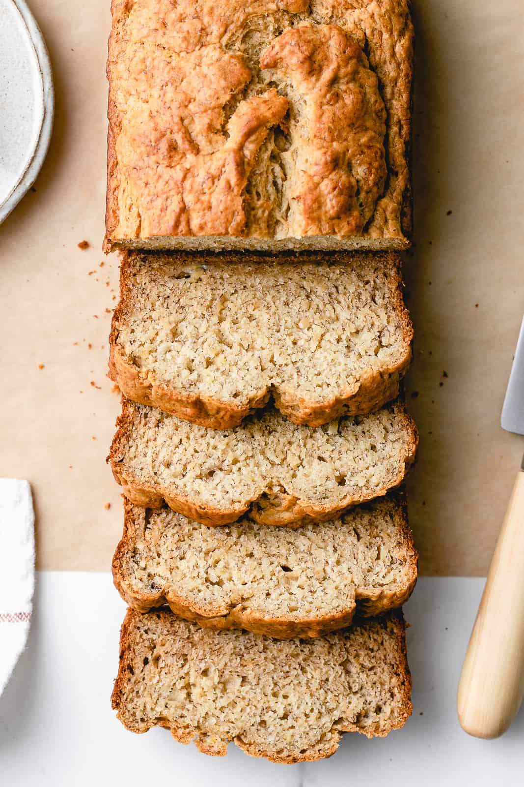

Banana Bread

Ingredients
- 1 3/4 cups (210 g) spelt flour (whole wheat, unbleached all-purpose, or gluten free blend)
- 1/3 cup (75 g) organic pure cane sugar (or 1/2 finely chopped dates)
- 1 1/2 teaspoons baking powder
- 1/2 teaspoon baking soda
- pinch of mineral salt
- 1/3 cup (75 ml) neutral flavored oil (or coconut oil in liquid state, vegan butter at room temp or applesauce
- 1 teaspoon vanilla extract
- 4 small or 3 large overripe bananas (about 1 1/2 - 1 3/4 cups (338-410g)), mashed
- 1/4 cup (56 ml) almond milk, use only if needed
Steps
- Preheat oven to 350 degrees F. Grease your loaf pan.
- In a medium/large size bowl, combine flour, sugar, baking powder, baking soda and salt, set aside.
- In a medium bowl, mash bananas. Add the oil, vanilla and bananas to the dry ingredients
and mix until combined, do not overmix. If mixture seems too thick, add the almond milk
- Pour batter into a greased loaf pan.
- Bake for about 50 min - 1 hour.
- Remove from oven and let cool for 10 min before slicing.
Extracted from this webpage